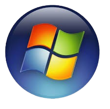

Hardware é toda a parte física do computador, ou seja, tudo o que você pode ver e tocar. Inclui:
É a principal placa do computador, onde todos os outros componentes são conectados e se comunicam entre si.
Funções:
É o cérebro do computador. Ele executa as instruções dos programas e realiza os cálculos e tomadas de decisão.
Funções principais:
A RAM é onde o computador guarda temporariamente os dados e programas que estão sendo usados naquele momento.
Características:
O Sistema Operacional é um conjunto de programas que controla o funcionamento do computador e faz a comunicação entre o usuário e o hardware (as partes físicas, como processador, memória, teclado, etc).
responsável por:
Um dos principais exemplos de sistema operacional é o Windows, desenvolvido pela Microsoft. Ele é amplamente utilizado em computadores pessoais e empresariais por ter uma interface gráfica simples e prática, com janelas, ícones e menus. Suas versões mais conhecidas são o Windows 10 e o Windows 11, que oferecem compatibilidade com a maioria dos programas e jogos disponíveis no mercado.

Outro exemplo é o Linux, um sistema livre e gratuito baseado em código aberto. Ele é muito usado em servidores, computadores pessoais e até em celulares, já que o Android é baseado nele. O Linux possui diversas versões chamadas de distribuições, como o Ubuntu, Fedora e Debian. É conhecido por sua segurança, estabilidade e personalização.
O macOS, criado pela Apple, é o sistema operacional utilizado nos computadores MacBook e iMac. Ele se destaca pelo design moderno, rapidez e integração com outros produtos da marca, como o iPhone e o iPad. Assim como o Linux, o macOS é baseado em UNIX, o que o torna um sistema estável e eficiente, muito usado por profissionais de design e edição de vídeo.
Por fim, o Android é o sistema operacional desenvolvido pelo Google, utilizado em smartphones, tablets e televisões inteligentes. Também baseado em Linux, ele é um sistema aberto e personalizável, presente na maioria dos celulares do mundo. Por meio da Play Store, os usuários podem instalar aplicativos e personalizar seus dispositivos conforme suas preferências.
O sistema de arquivos é o conjunto de regras e estruturas usadas pelo sistema operacional para organizar e controlar a forma como os dados são armazenados e recuperados em um dispositivo de armazenamento, como um disco rígido, SSD ou pendrive. Ele é responsável por gerenciar os nomes, tamanhos, localizações e permissões dos arquivos e pastas, garantindo que o usuário e o próprio sistema possam acessar as informações de maneira rápida e segura. Existem diferentes tipos de sistemas de arquivos, como o FAT32 e o NTFS no Windows, ou o EXT4 no Linux, e cada um deles possui suas próprias características e formas de organizar os dados.
Ele recebe informações do ambiente, processa esses dados e controla dispositivos de acordo com o que foi programado.
São os sensores e dispositivos que enviam informações para o Arduino.
Exemplos:
O microcontrolador (geralmente um ATmega328 no Arduino Uno) interpreta o programa que você gravou nele usando a IDE Arduino.
Ele decide o que fazer com os dados recebidos — por exemplo: "Se o sensor de luz detectar escuridão, acenda o LED."
Depois de processar as informações, o Arduino envia comandos para os dispositivos de saída.
Exemplos:
O comportamento do Arduino é definido por um programa (sketch) escrito na Arduino IDE, em linguagem baseada em C/C++.
Depois que o código é compilado e enviado para a placa via cabo USB, ele fica gravado no microcontrolador e é executado automaticamente.
O Arduino pode ser ligado por:
O Arduino é programado em uma linguagem baseada em C e C++, dentro do software Arduino IDE.
Simples e fácil de entender.
Usa funções próprias, como setup() (configuração) e loop() (repetição).
void setup() {
pinMode(13, OUTPUT); // Define o pino 13 como saída
}
void loop() {
digitalWrite(13, HIGH); // Liga o LED
delay(1000); // Espera 1 segundo
digitalWrite(13, LOW); // Desliga o LED
delay(1000); // Espera 1 segundo
}